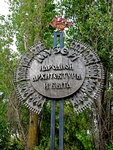
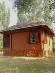
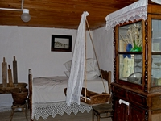
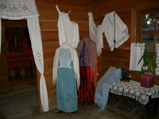
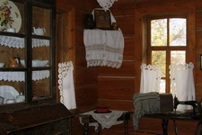

В живописном уголке природы, на берегу реки Иловля в Иловлинском районе Волгоградской области,
на 79 километре трассы М6 Каспий,
под открытым небом расположился музей народной архитектуры и быта донских казаков - Казачий курень.
Музей представляет собой казачью усадьбу конца XIX-начала XX века, в которой нашли отражение главные элементы
традиционной материальной культуры донского казачества: дом (курень), летняя кухня, мастерская и хозяйственные постройки,
прекрасно вписавшиеся в ландшафт местности.
Музей быта донских казаков - одно из интереснейших мест в Волгоградской области, которое стоит посетить и познакомиться
с бытом, обычаями, традициями донских казаков.

Музей казачьей народной архитектуры и быта (Казачий Курень)
Описание
В музее
Подлинные экспонаты, собранные в экспозиции, воссоздают быт казачества дореволюционного времени.
Наряду с предметами быта особое место в музее занимают "живые экспонаты". Это лошади, куры, которые вносят
дополнительный колорит в казачью усадьбу, делая ее жилой.
Здесь можно принять участие в обрядах "Посвящение в казаки", "Казачья свадьба", послушать старинные песни, совершить конную прогулку по берегу живописной речки Иловли.
Желающие приобретут сувениры и продукцию народных промыслов, отведают казачьих пышек с медом и каймаком.
Вы познакомитесь с обычаями, традициями этого самобытного народа, казачьими песнями и танцами.
Если повезет, Вы сможете стать гостем традиционных осенних казачьих ярмарок,
фольклорных праздников, постоянным участником которых на протяжении многих лет является
Государственный Ансамбль песни и танца.
Фотографии
    
Расположение
 )
)
Расположение музея быта донских казаков на интерактивной карте
Музей казачьей народной архитектуры и быта (Казачий Курень) находится в Иловлинском районе Волгоградской области
непосредственно у трассы М6 (79 километр).
Если Вы едите с московского направления, то ориентир – река Иловля, после пересечения которой сразу с правой стороны будет музей.
Если Вы едите со стороны Волгограда, то ориентиром может служить поворот в поселок Иловля, через 1 километр после которого слева будет музей.
Дополнительная информация
Музей можно посетить с 10 до 16 ежедневно. В это время вас проведёт экскурсовод и обратит ваше внимание на очень интересные предметы, расскажет про обычаи и жизнь казаков.
Телефон музея: 8(8446)75-12-10.
Рядом с музеем находится стилизованный ресторан "Казачий Курень", можно отведать блюда казачьей кухни.